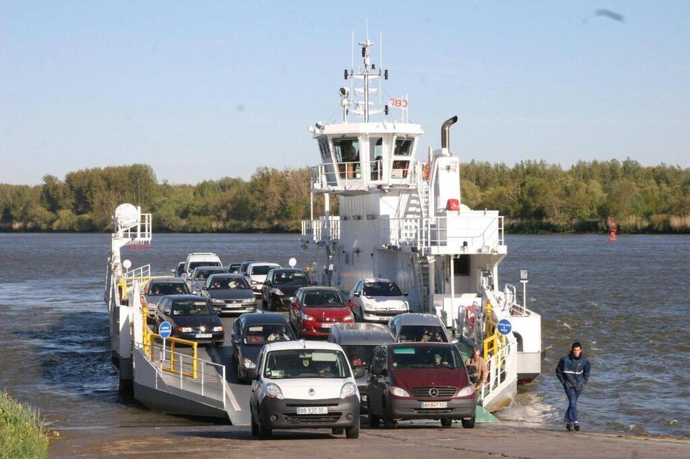
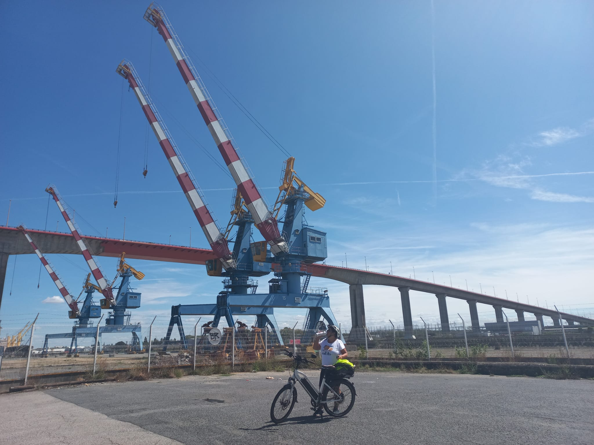
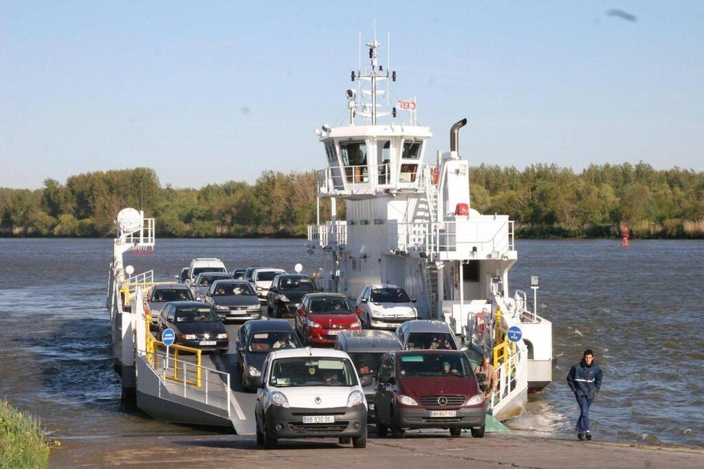
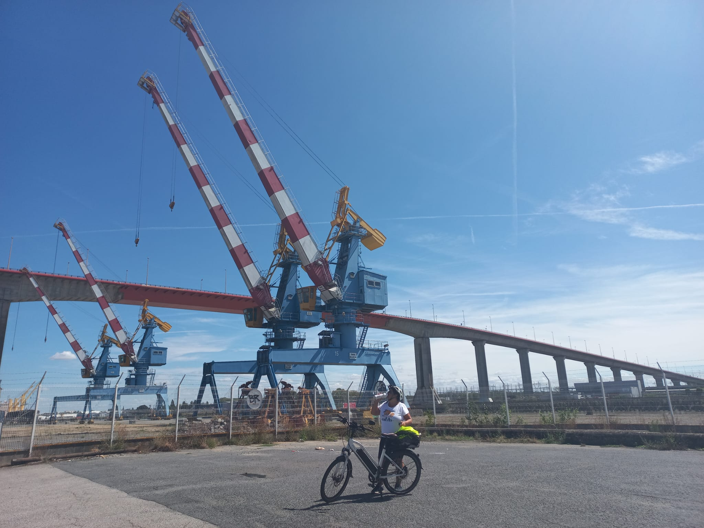

Bienvenue à Chaist Jean
Un grand Loft avec 3 chambres d'hôtes toutes équipées d'une salle de bain et WC privatif et 2 gîtes (F2) situés sur la commune de Saint-Jean-de-Boiseau sont disponibles pour accueillir des voyageurs à l'occasion de séjours de vacances et/ou professionnels.
Location minimum 2 nuits, à la semaine ou au mois possible selon vos besoins.
Situation Privilégiée
Sur le parcours de La Loire à Vélo et celui de Nantes-Estuaire (Château du Pé) entre Nantes (cœur de ville à 15 kms) et l'océan Atlantique (Pornic à 35 kms) en grande proximité avec le bac de Loire Indret-Basse-Indre.


 


